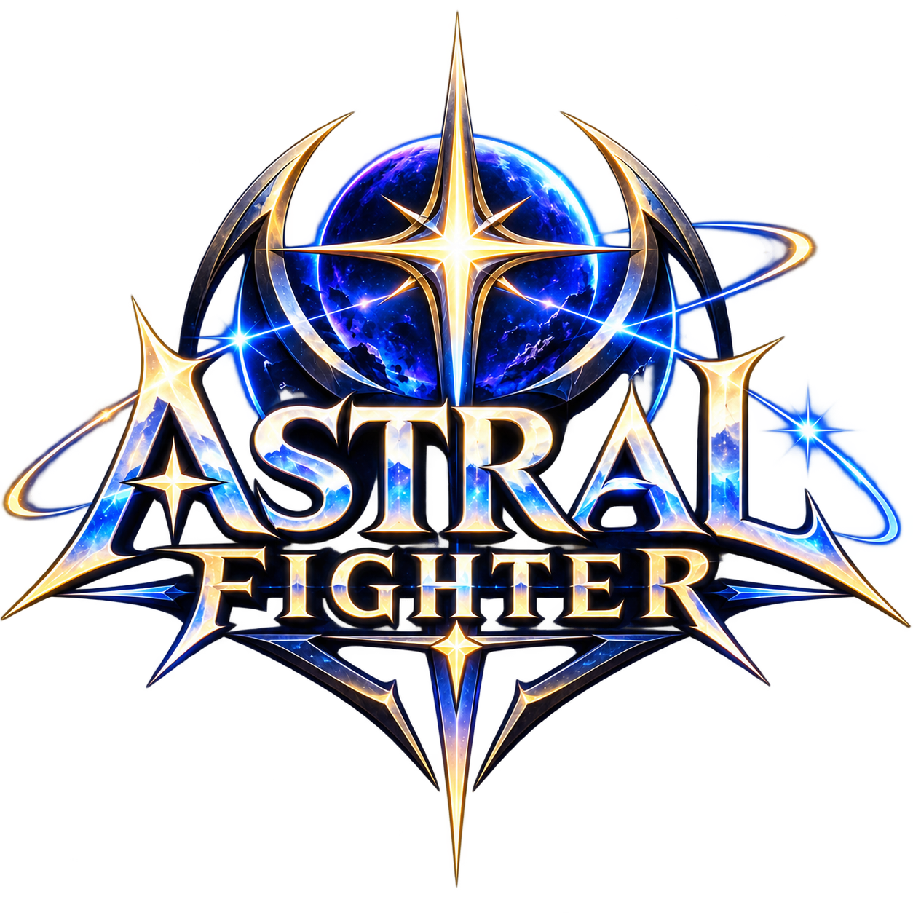
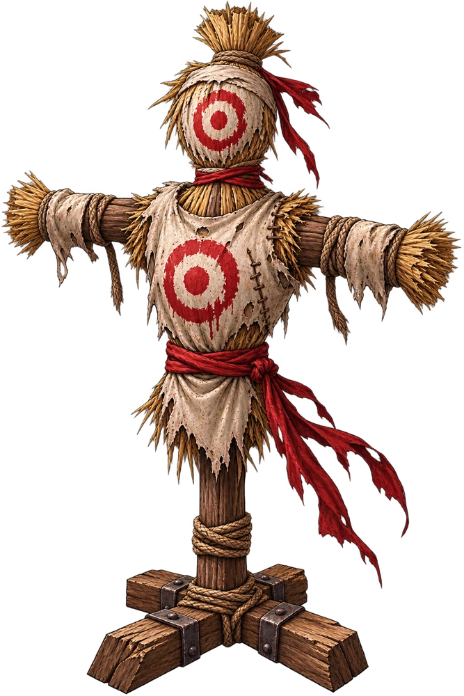

Votre premier équipement Astral ouvre les portes de la Forge. Éveillez jusqu’à trois étoiles pour façonner sa puissance.

Affrontez le mannequin d’entraînement avec votre compagnon actuel. Il n’attaque pas et ses PV sont illimités. Les dégâts restent visibles.
Aucun or, aucune EXP, aucun butin ni progression de succès. Les potions utilisées sont conservées. Vous pouvez quitter quand vous le souhaitez.